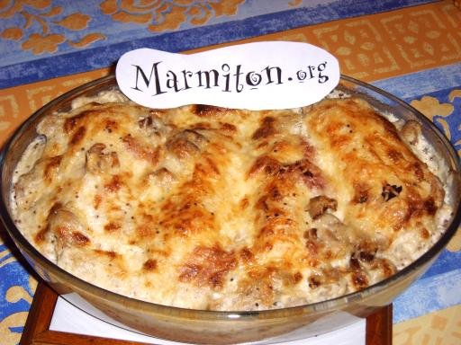

Gratin de quenelles
Ingrédients
4×
- 8 grosses quenelles fraîches
- 200 g de champignons
- 4 tranches de jambon
- 4 c. à c. de moutarde
- béchamel (50cl de lait)
- 100 g de gruyère râpé

Préparation
Étape 1
Mettre 8 grosses quenelles fraîches dans un plat à gratin. Parsemer de 200 g de champignons et 4 tranches de jambon émincés en fines lamelles.
Étape 2
Mélanger 4 c. à c. de moutarde à la béchamel (50cl de lait) et la verser sur les quenelles.
Étape 3
Recouvrir de 100 g de gruyère râpé et gratiner 30 à 35min à 200ºC, le temps que les quenelles gonflent.
Résumé
8 grosses quenelles fraîches
200 g de champignons
4 tranches de jambon
émincés
4 c. à c. de moutarde
béchamel (50cl de lait)
Mélanger
100 g de gruyère râpé
gratiner 200ºC